Where two ripples cross, a bud blooms.
Tap the pond and a scan ring spreads across the water. A bud it passes trembles, but holds. Tap from the other side at the same moment and the two rings meet on it. It opens, tears into a burst of colour, and sends out a bright ring of its own.
That ring opens any bud close enough. Clusters go off like dominoes, the chain count climbs, and every tap plays a note in key with the music. Every pond deals its flowers five colours of their own, and every flower has its own way of breaking: a tear, a rain, a star, a scan, a mosaic.
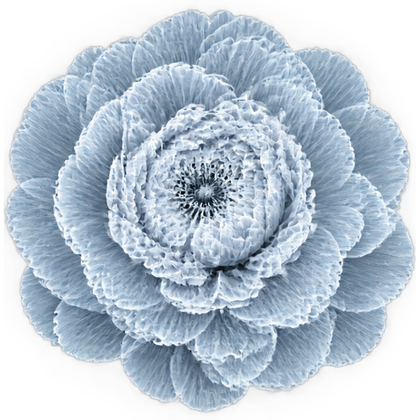
Made for the worst ten minutes.
Before you play, you rate the urge from one to ten. After, you rate it again, and the app keeps your numbers so you can see how much it drops. The session has a shape: a run in, a boss at the halfway mark where an urge is usually strongest, and a settling at the end.
A boss you open on the beat.
Halfway through, the pond clears and one giant flower takes it. A ring closes in with the music; tap the flower the moment the ring meets its edge and a layer tears away. Miss, and it knits back and the ring comes round again. Four layers, and the whole pond goes up when the last one goes. Five bosses, one each day.
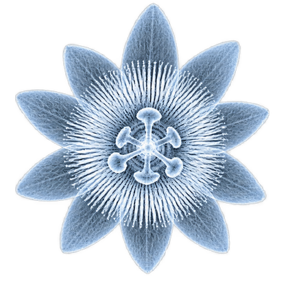
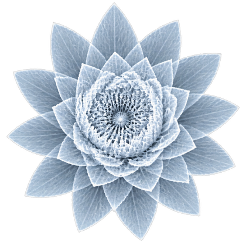
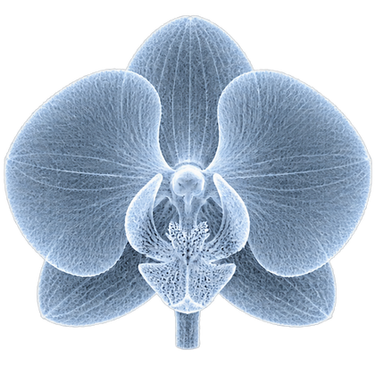
A tank that fills with every clean day.
Set your start date and the count begins. Each clean day brings a praying mantis closer, each in a vivarium of its own, planted for where it lives: moss for the moss mantis, orchids for the orchid mantis, a floor of curled leaves for the dead leaf. Twenty-four species over a year, each with a fact and, when you tap it, its true colour.
If you slip, the count starts again from today. Nothing in your tank is taken away for good; they come back as you go again.
Counting clean days is free. The tank and the puzzle ponds beyond the first six are part of Full bloom, a single purchase.
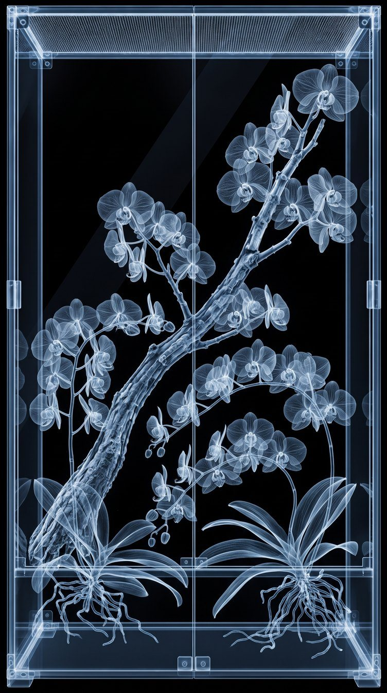
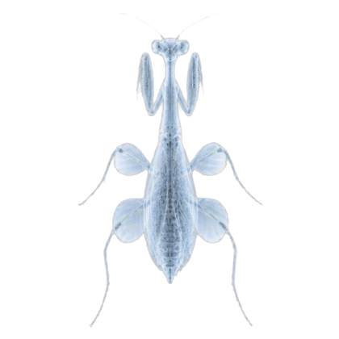
0.424 0.287
BL 067MM H 335
Twenty-four mantises.
Every one an X-ray, from the European mantis on day one to the devil's flower mantis at a year.
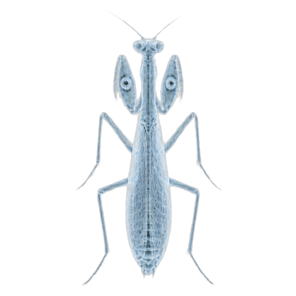
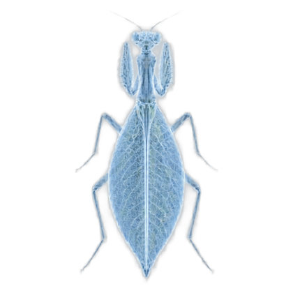
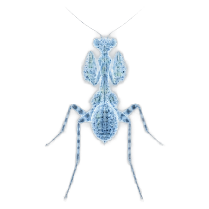
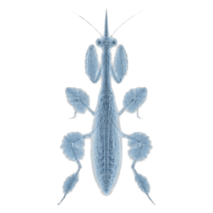
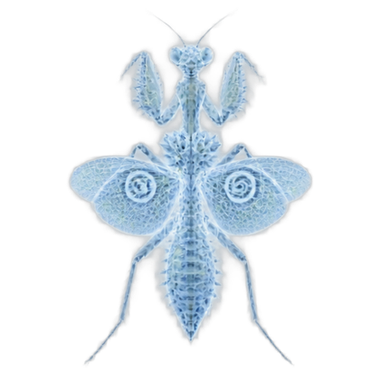
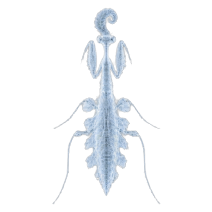
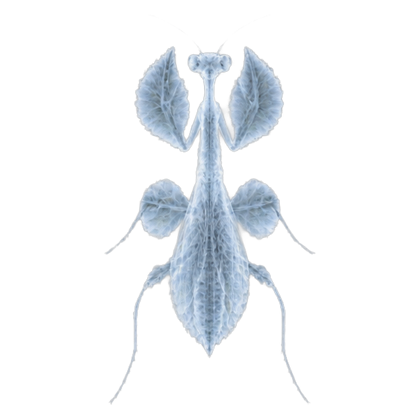
Anxious instead of craving.
Calm mode swaps tapping for holding. Hold a flower as you breathe in, let it go as you breathe out, and the pond plays itself as a slow harp, low on the left and high on the right. No chains, no count, no clock to beat.
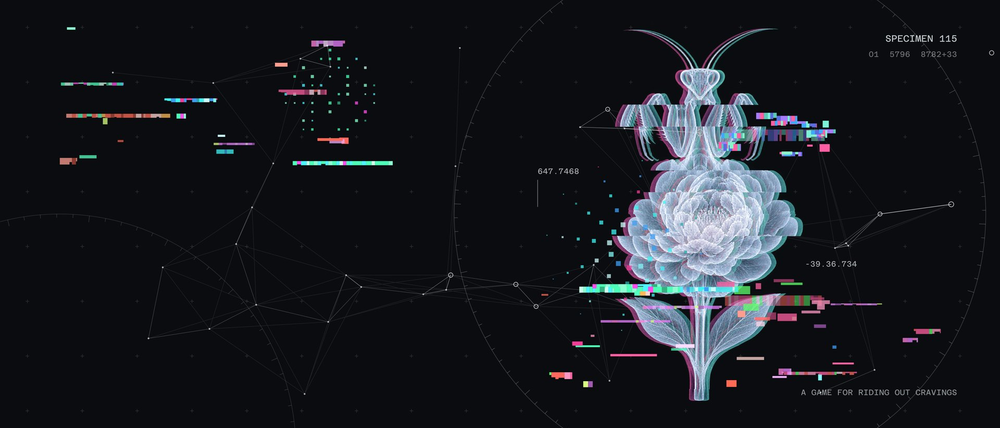
Nothing leaves your phone.
There is no account to make and nothing to sign in to. Your ratings, your clean days and your tank are stored on your phone and nowhere else.
- AccountNone
- AdsNone
- Analytics or trackingNone
- Data collectedNone
- Works offlineYes
- PriceFree. One purchase for the tank and every pond
- RequiresiPhone, iOS 17 or later
Anthesis is not treatment and does not replace support. It is one more thing to reach for instead.